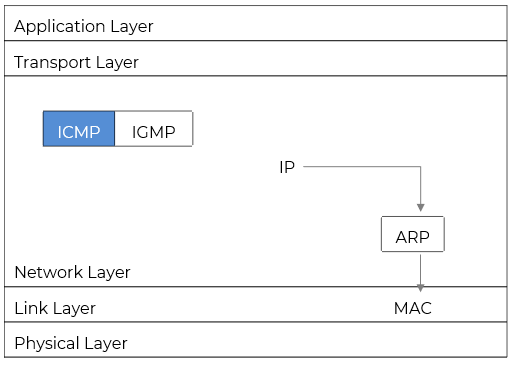
|
07 |
815 |
1631 |
|---|---|---|
| Type | Code | CHECKSUM |
| ID | SEQ NUMBER | |
| Data | ||
0x00：回显应答 Echo Reply
0x03：终点不可达 unreachable → 通知源点
0x05：重定向 Redirect → 通知源点
0x08：回显请求 Echo Request
0x0b：路由超时 Time Exceeded → 丢弃并通知源点
0x0c：参数错误 Parameter Problem → 丢弃并通知源点
0x00：网络不可达
0x01：主机不可达
0x02：协议不可达
0x03：端口不可达
0x04：需要分片，但是设置为禁止分片 DF = 1
前面5个部分就是 ICMP 的首部
固定长度是8 Bytes
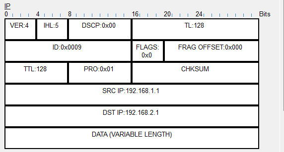
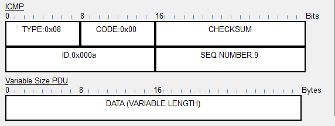
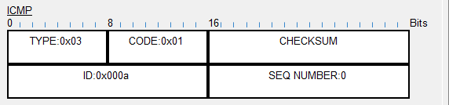
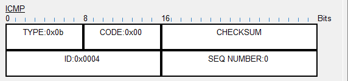
1台路由器 2911
诺干主机
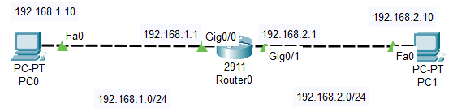
PC0：192.168.1.10，255.255.255.0，网关：192.168.1.1
PC0：192.168.2.10，255.255.255.0，网关：192.168.2.1
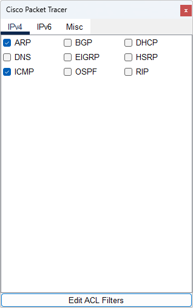
C:\>ping 192.168.2.10
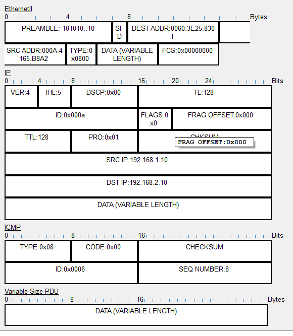
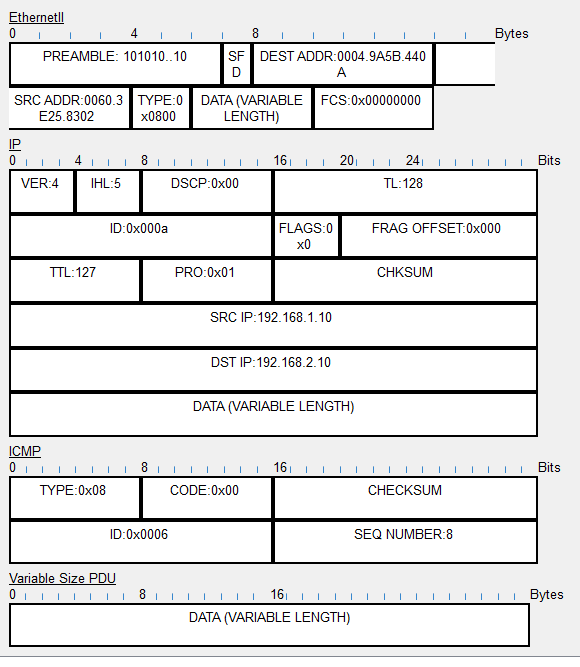
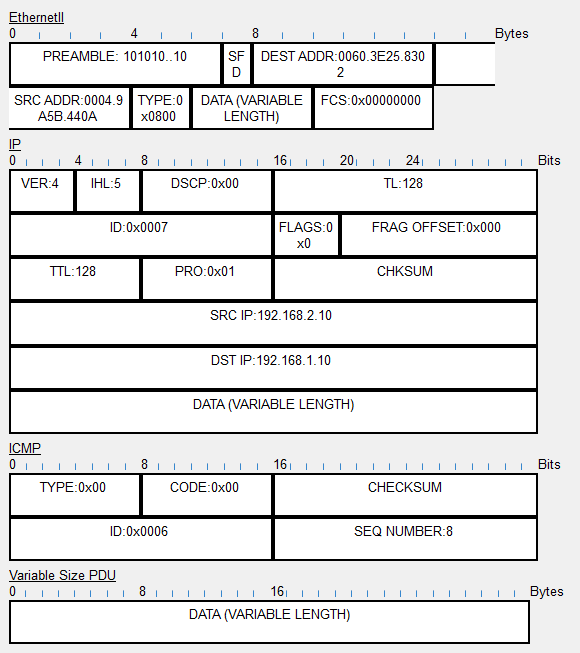
C:\>ping 192.168.2.10 Pinging 192.168.2.10 with 32 bytes of data: Reply from 192.168.2.10: bytes=32 time=4ms TTL=127
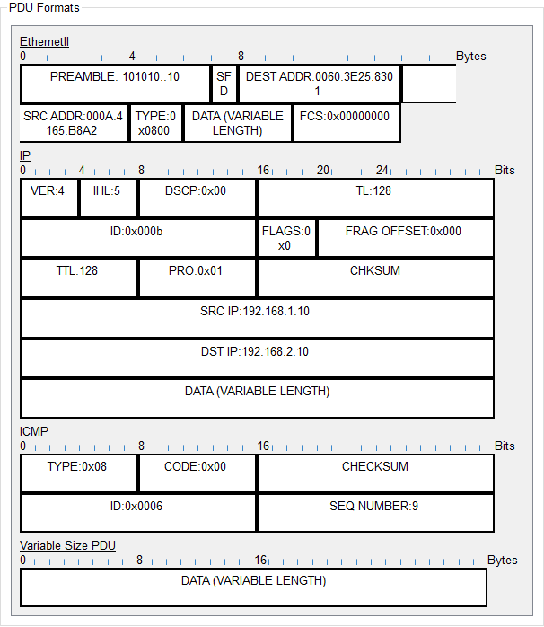
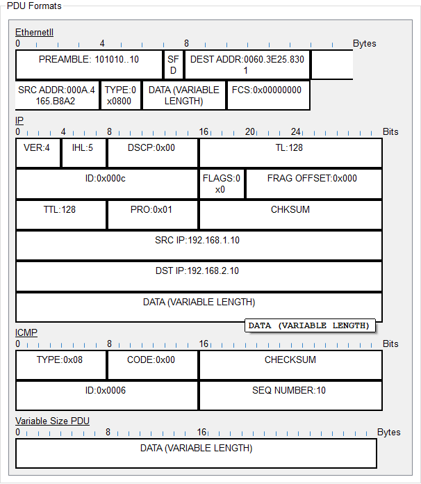
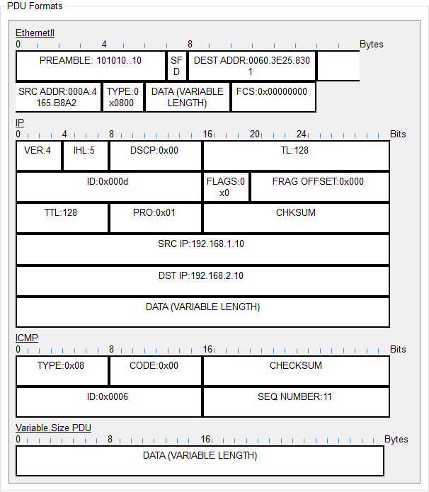
C:\>ping 192.168.2.10
Pinging 192.168.2.10 with 32 bytes of data:
Reply from 192.168.2.10: bytes=32 time=4ms TTL=127
Reply from 192.168.2.10: bytes=32 time=4ms TTL=127
Reply from 192.168.2.10: bytes=32 time=4ms TTL=127
Reply from 192.168.2.10: bytes=32 time=4ms TTL=127
Ping statistics for 192.168.2.10:
Packets: Sent = 4, Received = 4, Lost = 0 (0% loss),
Approximate round trip times in milli-seconds:
Minimum = 4ms, Maximum = 4ms, Average = 4ms
Router(config)# ip route 192.168.2.10 255.255.255.255 null0
C:\>ping 192.168.2.10
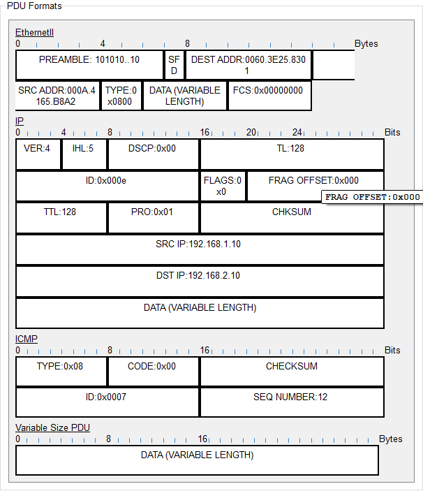
The outgoing interface is a Null interface. The device drops the packet.
The device drops the packet.
第一次探测失败
C:\>ping 192.168.2.10 Pinging 192.168.2.10 with 32 bytes of data: Reply from 192.168.1.1: Destination host unreachable.
C:\>ping 192.168.2.10
Pinging 192.168.2.10 with 32 bytes of data:
Reply from 192.168.1.1: Destination host unreachable.
Reply from 192.168.1.1: Destination host unreachable.
Reply from 192.168.1.1: Destination host unreachable.
Reply from 192.168.1.1: Destination host unreachable.
Ping statistics for 192.168.2.10:
Packets: Sent = 4, Received = 0, Lost = 4 (100% loss),
路由器在发现无法送达时，会把原始 Ping 请求包里的数据（包括一部分IP头和ICMP头）原封不动地“抄”下来，放在这个“不可达”报文的载荷里，作为回执证据发给你的电脑
创建拓扑
配置 IP 地址
配置静态路由
利用 Ping 测试网络的连通性，并分析可能出现的问题
删除配置的静态路由；重新配置默认路由
利用 Ping 测试网络的连通性，并分析可能出现的问题
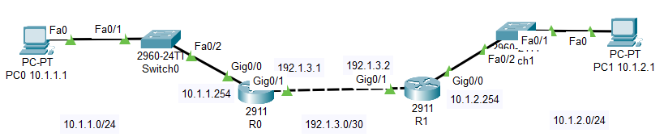